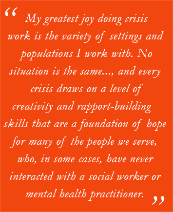

How Ian Yuan-Jian Bohannon Became a Mental Health Agent of Change
MHSA Stipend Grad Builds a Rewarding Career on the LA County DMH Psychiatric Mobile Response Team
November 1, 2017
“Starting in undergrad recognizing the stressors and challenges of both being a student and a fledgling adult, I saw the stigma of seeking help,” says Ian Yuan-Jian Bohannon. It was his epiphanic encounter with the mental health system that inspired him “to become an agent of change within it.”
After earning his B.A. in sociology at UCLA, Ian says, “I knew I wanted to work in mental health, but I didn’t know in what capacity.” Initially he interned at the Jump Start Mental Health Program of the Mental Health Association of Los Angeles (MHALA), which focused on recovery as a model “to build a meaningful life in spite of the challenges we are dealt,” he explains.
“That was my first exposure to the public mental health system, where I saw firsthand the disparity between recovery as a model and the treatment of those with mental illness in practice,” says Ian. “While the Department of Mental Health and the general culture were continuing to shift to a person-centered philosophy, there was still much to be desired for helping those in need,” he observes.
That internship led to his first job, also for the Jump Start Program. There, he says, “I developed a mission to personally devote myself to promoting recovery as a model to overcome stigma and empower people to building lives worth living.”
Next Step: MHSA Stipend Program
After working at MHALA, Ian says, “I was encouraged by my colleagues, many of whom were social workers, to go back to school and increase my influence to a greater level. Recognizing that my coworkers were all social workers, I did my research and found the MSW to be the right path for me.”
Learn more about the MHSA Stipend Program
To pursue the MSW, Ian returned to UCLA and enrolled in CalSWEC's Mental Health Services Act (MHSA) Stipend Program. “The program had a great influence on the curriculum in that the requirements of those who had a mental health track were focused on developing in key areas that would later serve to be the skills utilized in the internship and beyond, into direct practice,” Ian says, reflecting on his experience. “The money offered along with program went straight to the school, but kept my loans down, which, as a public servant, is crucial in being able to pay those loans back in full.”
Variety of Situations, Populations Is Stimulating
One of his internships was with the Los Angeles County Department of Mental Health (DMH) Psychiatric Mobile Response Team working on a multidisciplinary team conducting crisis intervention. Today, four years later, Ian, now an LCSW, is still with the team, but as a Psychiatric Social Worker II, a position he relishes. Among his responsibilities, he conducts 5150/5585 crisis evaluations for clients who may be a danger to themselves, others, or are gravely disabled and creates safety plans or facilitates hospitalizations.
“My greatest joy doing crisis work is the variety of settings and populations that I work with. No situation is the same, though many appear similar from the outset, and every crisis draws on a level of creativity and rapport-building skills that are a foundation of hope for many of the people that we serve, who, in some cases, may have never interacted with a social worker or mental health practitioner,” Ian says.
“With crisis comes challenge, and the biggest challenge is rarely coming up with a plan to address the crisis, but rather the lack of resources available in the community. Coming up short-handed with places to send people for help has always been the hardest part of this work,” he acknowledges.
Addressing Campus Violence
Despite that, Ian remains dedicated to helping those in need. While working on the Psychiatric Mobile Response Team, he additionally was on the School Threat Assessment Response Team (START), also for Los Angeles County DMH. The program was developed in 2009 as a means to prevent campus violence and the recurrence of incidents like those at Columbine and Virginia Tech. The strategy involves identifying at an early stage those at risk of engaging in targeted school violence and providing interventions to effectively stop those on a pathway toward violence.
Read about other CalSWEC MHSA Stipend and IV-E Stipend Recipients
“The award-winning team has served as a model because of its apparent effectiveness at reaching out to those at risk—students who have made threats and may have even gone so far as to planning out an attack—and engaging them with help rather than punishment to produce positive outcomes,” explains Ian. “In some cases, this meant starting with an angry and hopeless individual with no view of the future to eventually helping them realize their importance in life, which may involve going to college or otherwise developing a career.”
As a member of this team, says Ian, “I went out and did threat assessments, a unique type of assessment similar to a crisis evaluation, and carried a caseload of individuals who were at different levels of risks. Over time, these individuals were linked to services and reassessed until they graduated out of the program by being deemed a low level of risk.”
Providing Insights on Diversity
Ian’s commitment to his field goes beyond the workplace. Since 2011, he’s served on the Board of Directors of the MHALA, which, as an advocacy organization, has been pivotal to many of the major movements in mental health in California, he says. “They were significant consultants in the Mental Health Services Act and were also the pioneers of the full-service partnership model that was piloted through their Village program,” Ian notes. “Being on the board provided me with a chance to offer my feedback and support as a multicultural individual with direct experience working in the field as part of the board’s greater vision to expand its diversity.” Ian's six-year term on the board ends this month.
Reflecting on his decision to become an agent of change within the mental health system, Ian says, “The best part of my career is being able to do something I feel rewarding on a personal level while also making a living where there continues to be room for growth.”